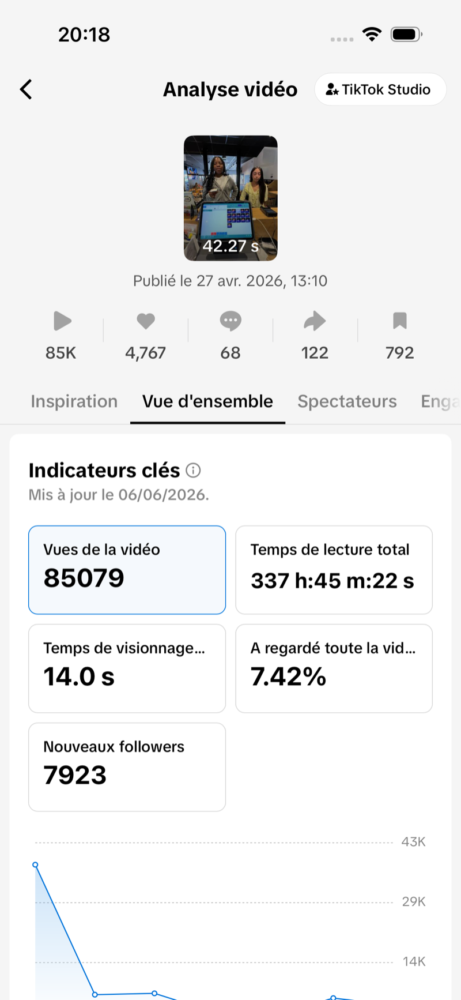

Le défi
Black and White Burger Angers démarre avec une notoriété de marque forte au niveau national (concept signé IbraTV, univers reconnaissable), mais une présence digitale locale quasi inexistante.
Un compte TikTok existait, quelques vidéos avaient été postées, mais elles dépassaient rarement les 1 000 vues. À cette période, le restaurant figurait parmi les établissements les moins avancés du réseau en communication digitale — dans une franchise qui pousse fortement ses points de vente à se développer en ligne.
Point de départ
- Compte TikTok inactif
- Vidéos sous les 1 000 vues
- Parmi les derniers de la franchise
Une décision radicale
Après analyse, plutôt que de continuer à pousser un compte qui stagnait depuis des mois, nous avons fait un choix peu conventionnel : tout supprimer et repartir de zéro.
Nouveau compte, nouvelle stratégie dès le premier jour, et un rythme volontairement agressif : 5 vidéos par semaine pour générer un maximum de visibilité en un minimum de temps.
La stratégie déployée
Chaque vidéo a un objectif précis : générer de la visibilité, créer de l'engagement, ou donner envie de pousser la porte du restaurant. Plusieurs formats ont été développés pour entretenir l'intérêt et maximiser la viralité :
- Micro-trottoirs dans les rues d'Angers
- Concepts humoristiques mettant en scène les Angevins
- Présentation dynamique des burgers et nouveautés
- Défis et tendances adaptés à l'univers de la marque
- Formats immersifs autour de l'expérience client
Le résultat le plus marquant
Alors que plusieurs restaurants du réseau investissent dans les réseaux sociaux depuis 2024, Black and White Burger Angers est entré dans le Top 3 des franchises les plus performantes en communication digitale en seulement 2 mois.
Une progression spectaculaire pour un établissement qui figurait jusque-là parmi les derniers du classement. 7 000 abonnés gagnés sur une seule vidéo.
Aujourd'hui
Les réseaux sociaux sont devenus l'un des principaux leviers de croissance du restaurant. Avec 5 vidéos par semaine, la marque bénéficie d'une visibilité continue auprès de son audience locale.
Cette présence répétée crée un effet puissant : Black and White Burger Angers reste constamment dans l'esprit des consommateurs et devient la référence locale identifiée naturellement quand on cherche où manger.